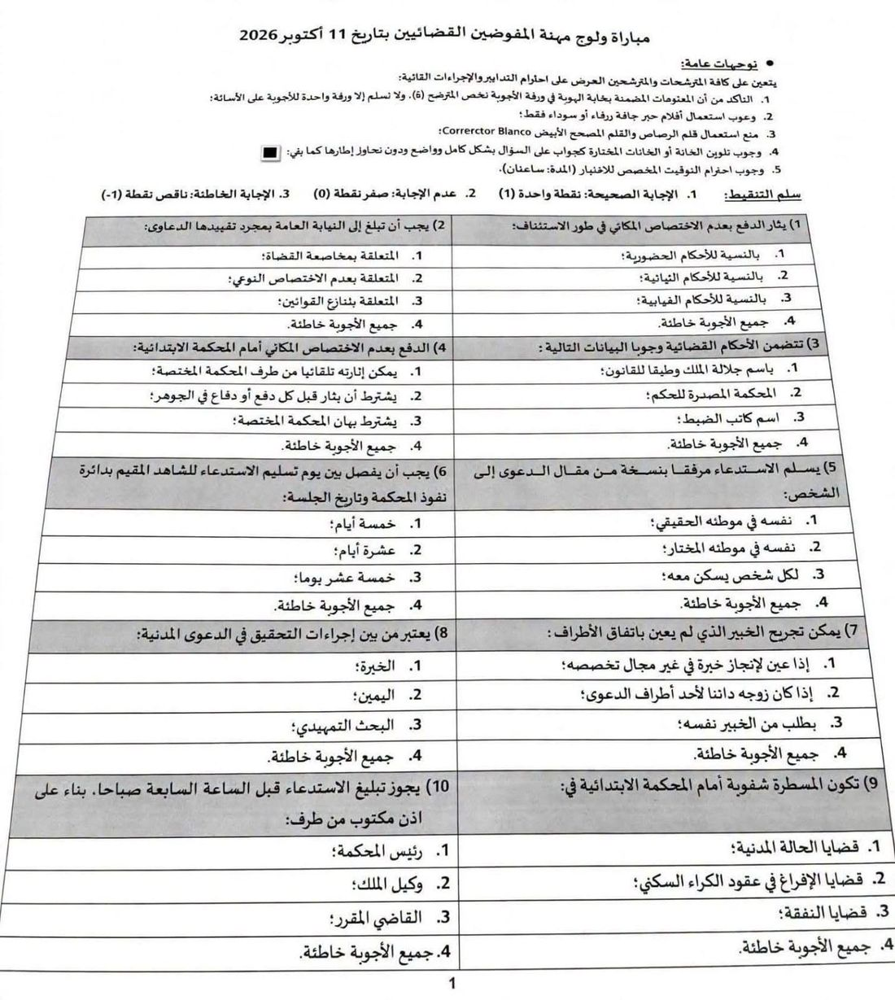
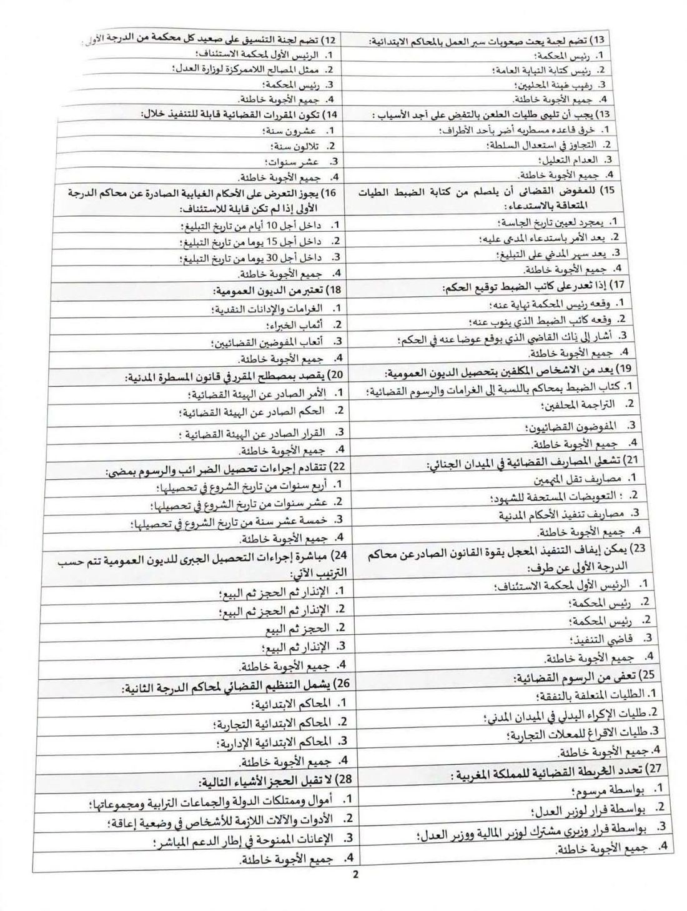
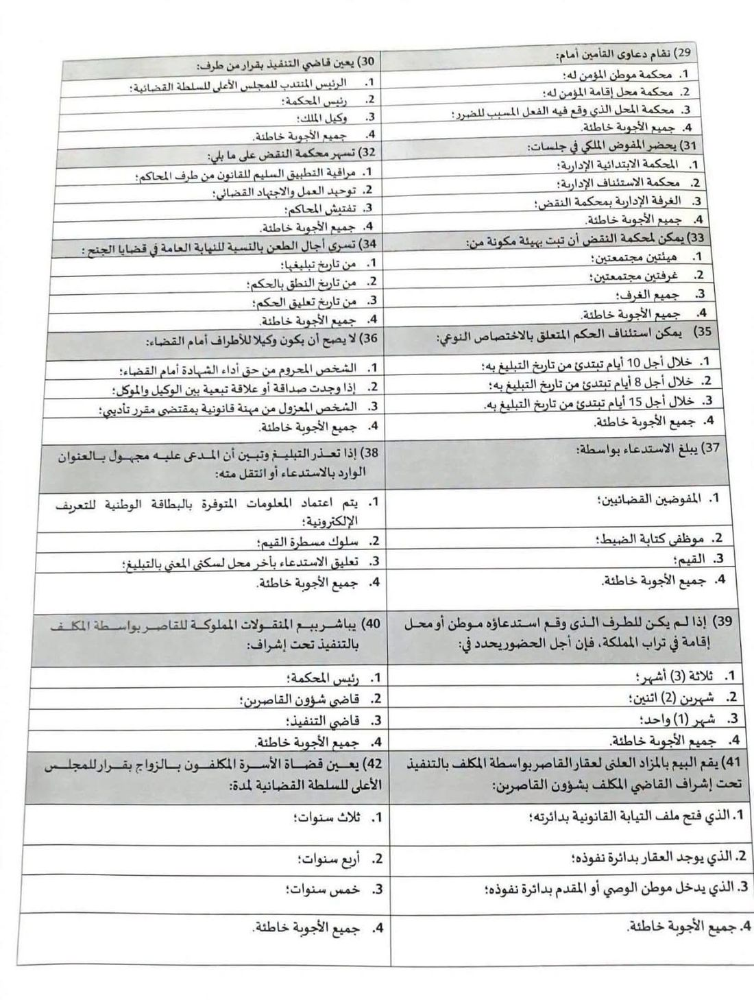
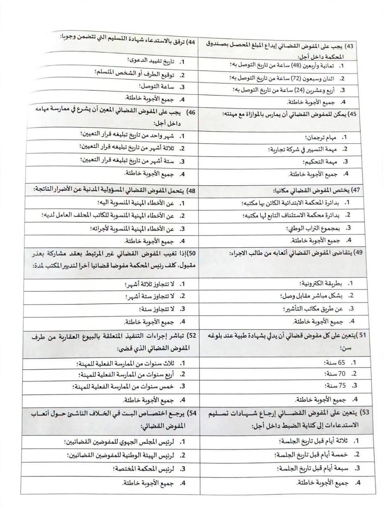
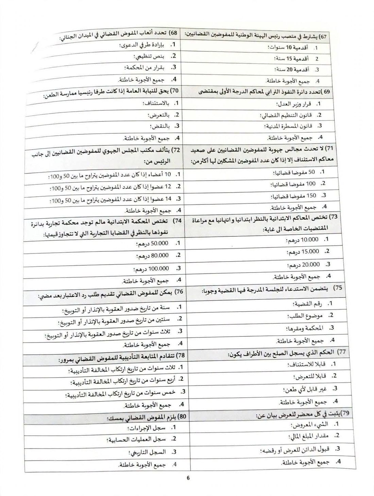

مباراة ولوج مهنة المفوضين القضائيين 2026: نموذج الاختبار الكتابي وتفاصيل المباراة
أُجري الاختبار الكتابي يوم الأحد 11 أكتوبر 2026 لشغل 200 مكتب للمفوضين القضائيين. نعرض هنا خمس صفحات متداولة من ورقة الأسئلة (اختيار من متعدد)، ونشرح قواعد الاختبار وسلم التنقيط ومواضيع الأسئلة، وما ينتظر الناجحين في الكتابي.
آخر مراجعة: 11 أكتوبر 2026
الخلاصة قبل التفاصيل
- الاختبار الكتابي انتهى. أُجري يوم 11 أكتوبر 2026، وتُعلن نتيجته على موقع وزارة العدل. هذه الصفحة للاطلاع على نموذج الأسئلة ومعرفة ما ينتظر الناجحين.
- مدة الاختبار ساعتان، والإجابة الخاطئة تخصم نقطة. الصحيحة بنقطة، وغير المجاب عنها بصفر، والخاطئة بناقص نقطة.
- الصور المعروضة ناقصة. هي خمس صفحات فقط من الورقة (الصفحات 1 و2 و3 و4 و6). لا تظهر الصفحة 5 (الأسئلة 55 إلى 66)، ولا يوجد معها مفتاح تصحيح رسمي.
- المباراة على مرحلتين: اختبار كتابي ثم اختبار شفوي في المعهد الوطني لكتابة الضبط والمهن القانونية والقضائية بسلا.
تفاصيل المباراة
مأخوذة من قرار وزير العدل رقم 26/218 الصادر في 28 يوليوز 2026، كما نشرته مواقع التوظيف. راجع نص القرار على موقع الوزارة قبل أي خطوة.
- الجهة
- وزارة العدل
- عدد المكاتب
- 200 مكتب بدوائر المحاكم الابتدائية
- النص المنظم
- القانون 46.21 المتعلق بتنظيم مهنة المفوضين القضائيين، والمرسوم 2.25.885 المطبق له
- الشهادة المطلوبة
- الإجازة في العلوم القانونية (القانون الخاص أو العام) أو في الشريعة أو ما يعادلهما
- التسجيل
- إلكترونيًا من 24 غشت إلى 7 شتنبر 2026 (الرابعة والنصف زوالًا)
- الاختبار الكتابي
- الأحد 11 أكتوبر 2026، مدته ساعتان بمعامل 2. فتح مركز الاختبار على 8:30 صباحًا وإغلاقه على 9:15
- الاختبار الشفوي
- مادتان: قانون المسطرة المدنية، والقانون المنظم لمهنة المفوضين. مدة التحضير 20 دقيقة، ولكل مادة معامل 1
- النجاح النهائي
- مجموع نقط الاختبارين لا يقل عن 40
- المعفون من المباراة
- مناصب في حدود 25% لموظفي هيئة كتابة الضبط والكتاب المحلفين، وفق المادة 6 من القانون 46.21
قواعد الاختبار كما تظهر في الصفحة الأولى
- التأكد من أن المعلومات المضمنة في خانة الهوية بورقة الأجوبة تخصك، ولا تُسلَّم إلا ورقة أجوبة واحدة.
- الكتابة بقلم حبر جاف أزرق أو أسود فقط.
- يُمنع قلم الرصاص والقلم المصحح الأبيض (Corrector Blanco).
- تلوين الخانة المختارة بشكل كامل وواضح دون تجاوز إطارها.
- احترام الوقت المخصص للاختبار، وهو ساعتان.
صور ورقة الأسئلة
اضغط على أي صورة لفتحها بالحجم الكامل. لكل سؤال أربعة خيارات، والخيار الرابع في أغلب الأسئلة «جميع الأجوبة خاطئة».





ما الذي تغطيه الأسئلة؟
من الصفحات المعروضة، تنقسم الأسئلة إلى أربعة محاور:
- 1 – 10المسطرة المدنية أمام المحكمة الابتدائية: الاختصاص المكاني، والاستدعاء وآجاله، والخبرة، والتحقيق، والمسطرة الشفوية.
- 12 – 42التنظيم القضائي والتنفيذ: محاكم الدرجة الثانية، والخريطة القضائية، وقاضي التنفيذ، والحجز، والديون العمومية، والطعن بالنقض، وأجل الاستئناف والتعرض، وأموال القاصرين.
- 43 – 54القانون المنظم للمهنة: شهادة التسليم، والمسؤولية المدنية، والأتعاب، والاختصاص المكاني، والغياب وتدبير المكتب، والشهادة الطبية.
- 67 – 80تنظيم الهيئة والتأديب والاختصاص: رئيس الهيئة الوطنية، والمجالس الجهوية، ورد الاعتبار، وتقادم المتابعة التأديبية، ومحضر العرض، والسجلات.
الأسئلة من 55 إلى 66 في الصفحة الخامسة غير ظاهرة في الصور التي وصلتنا.
ملاحظات على الورقة
- يتكرر الرقم 13 في الصفحة الثانية لسؤالين مختلفين، ولا يظهر السؤال 11 في الصفحات المعروضة.
- يتكرر رقم الخيار 2 في السؤالين 23 و24، وهو خطأ مطبعي في الورقة المتداولة.
- لا نقدّم مفتاح أجوبة. الأسئلة مبنية على القانون 46.21 وقانون المسطرة المدنية وقانون التنظيم القضائي، وأي مفتاح غير رسمي قد يضلّلك. اعتمد النصوص القانونية ومصدر الوزارة.
ماذا بعد الاختبار الكتابي؟
- إعلان النتائج. تُنشر نتيجة الكتابي على موقع الوزارة. ولا يُعد ناجحًا في الكتابي من لم يبلغ معدل 10 في كل مادة.
- تجهيز الوثائق. يدلي الناجح يوم الاختبار الشفوي بأصل أو نسخة مطابقة لأصل البطاقة الوطنية، وشهادة الإجازة (مع قرار المعادلة عند الاقتضاء)، وصورة شخصية حديثة. وإلا سقط نجاحه في الكتابي.
- الاختبار الشفوي. بالمعهد الوطني لكتابة الضبط والمهن القانونية والقضائية بتكنوبوليس سلا، ويكون الإعلان بمثابة استدعاء.
- اللائحة النهائية. يُعد ناجحًا نهائيًا من حصل في الاختبارين على مجموع لا يقل عن 40، وتُنشر القائمة مرتبة بحسب التفوق.
الروابط الرسمية
الصور المعروضة متداولة ولا تحمل ختمًا رسميًا، وقد تختلف الورقة الأصلية عنها. المعلومات عن المباراة ملخصة من القرار المنشور بتاريخ 3 غشت 2026، وقد تتغير التفاصيل، فارجع إلى موقع وزارة العدل. هذا الموقع ليس جهة حكومية ولا يقدّم استشارة قانونية.